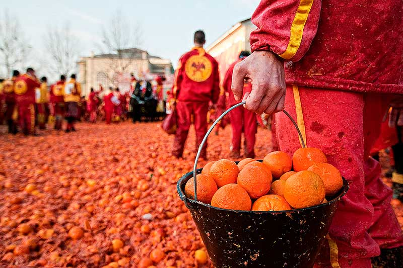
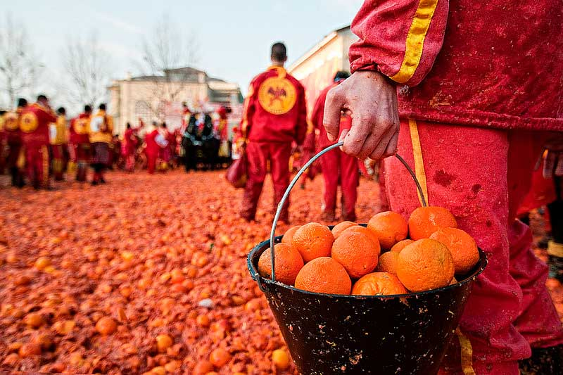

Cultura italiana
Carnavales de Venecia
Son muy populares en la ciudad y se celebran en los días previos a la cuaresma, la tradición consiste en usar máscaras. Su significado puede variar, estas máscaras podían ser utilizadas como burla a la aristocracia o como una forma de celebración para evadir las clases sociales o estatus.


Batalla de las Naranjas
Se celebra los tres días previos al miércoles de ceniza. La celebración de esta tradición consiste en hacer equipos vestidos de un color que los pueda identificar a cada uno que sea diferente. Durante los tres días del festejo, los equipos se enfrentan arrojándose naranjas entre ellos. El hecho tiene como objetivo realizar la destrucción del equipo oponente y conseguir que alguno de los dos equipos sea el ganador. Este festejo tiene como objetivo representar el día en que el pueblo estuvo en contra de lo que llevó a cabo el líder que quería pasar la noche de bodas con varias mujeres. Los equipos representan a aquellos que estuvieron a favor del duque y los otros a los que estaban a favor de Violetta y siempre escogían a una mujer para que fuera la representación de Violetta.
 

Fiesta de la República Italiana
Esta fiesta se celebra anualmente el 2 de junio. Este día en Italia es como un día festivo en Colombia pues durante la fecha no se realizan actividades académicas o laborales. Es un día muy respetado por los ciudadanos entonces prefieren quedarse en casa o rendir homenaje con la celebración que brinda el gobierno, como ceremonias oficiales y desfiles militares.